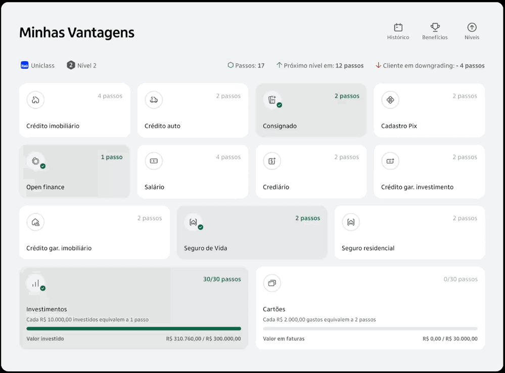

Overview
An internal console that shows a branch manager where a client stands in Minhas Vantagens, the bank’s relationship programme. Before it existed, managers had no view of the programme at all: when a client asked why a benefit had gone, the manager had to ask the client to explain their own account.

The question was pointed the wrong way
A client walks into a branch and asks what happened to their level. The manager is the one person in the room who should be able to answer, and the only information available was whatever the client could recall. Giving the manager the same picture the client sees, plus the reasons behind it, was the whole project.
Loss is the part people ask about
Programme dashboards tend to show progress and stop there. This one leads with the risk: steps lost, and a warning when the client is close to a downgrade. The history can be filtered to lost steps, rule changes and segment changes, because those are the events a client comes in angry about and the ones a manager could never explain.
An abstract programme priced in steps
Each product carries what it is worth, and the accumulation products show a figure against a threshold rather than a vague sense of progress. That turns a loyalty programme into a concrete conversation at a desk: here is where you are, here is what closes the gap.
Get in touch
Want the longer version of this one? That is a better conversation than a page.
Ask me about it